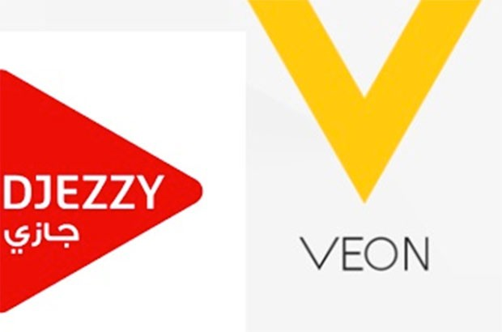
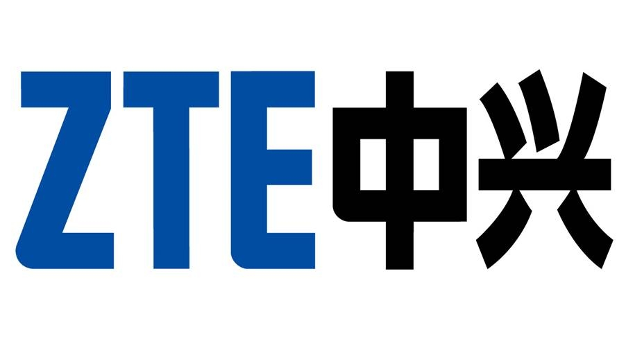
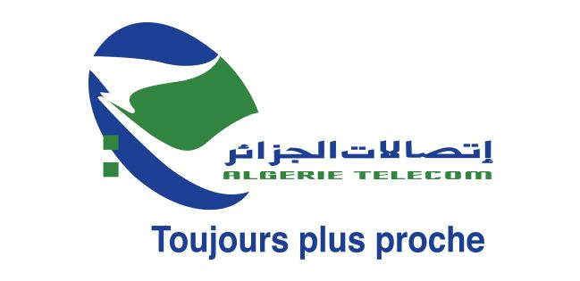

| GUITI Aicha | Celibataire |
| 127 route ST lue villetaneuse | Permis B |
| +33766575330 | |
| guiti_aicha22@hotmail.com |
| 2018 | Master ingenrie et innovation en image et reseaux /parcours reseaux a paris 13 |
| 2016 | Master en Systèmes Intelligents de Télécommunication (SIT). |
| 2014 | License génie électrique et électronique LGE |
| 2011 | Baccalauréat série génie électrique |
| Devloppement | PHP,MATLEB et VHDL |
| Base de donnees | MySQL,PostgerSQL |
| Reseaux Télécom | Réseaux mobiles (2G, 3G, 4G et introduction de 5G) Architecture, techniques de transmission,analyse et optimisation |
| Reseaux informatique | Réseaux pile TCP / IP : IP, TCP, UDP, DNS : adressage et routage | Langues | Arabe: avancé. Français: Bilingue. Anglais technique: moyen |
| Nov 2017- Sept 2018 | Benchmarking & Quality Analysis 2G/3G/4G engineer chez Optimum Télécom Algérie  |
| Mai- Nov2017 | Ingénieur Radio 2G/3G/4G chez ZTE Algérie  |
| Déc-mars 2017 | IT engineer chez Quabes Com Algérie |
| 2o16 | Stage de fin d’étude 'Analyse et l’optimisation d’un réseau LTE/4G'chez ATM mobilis | 2015 | Stage chez Algérie télécoms  |
| 2013 | Stage chez Algérie télécoms |
| Culture | Cinema,lecteur |
| Sport | Ranning |